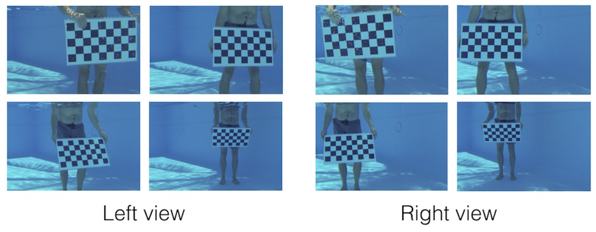
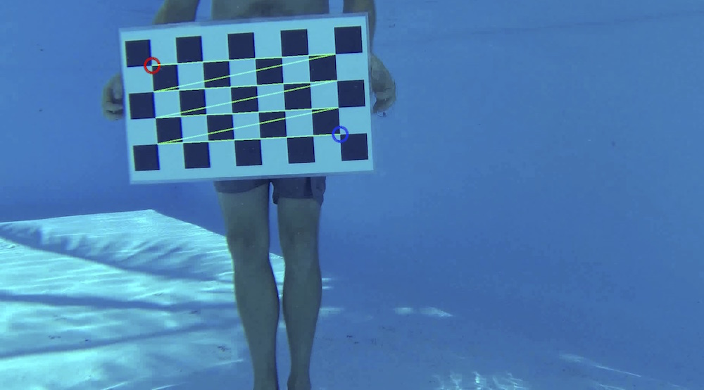

5.3 Calibrating with video
The following will show you how to call calibrateCameras() using a set of videos from two or more camera views. This differs only slightly from calibrating with photographs so much of the previous section will apply here as well. Your videos will need to be synchronized in order for the calibration to work properly (the first frame in all views must correspond to the same point in time). StereoMorph does not currently have tools to synchronize videos so this will have to be done using another program. Also, make sure that you have completed the steps in installing ffmpeg so that R can read the video files.
1. Record video of the checkerboard pattern being moved and rotated throughout the entire calibration space. It is essential that the checkerboard be moved throughout the entire space or else reconstruction errors will be higher in some areas than in others.
2. Upload the videos into a single folder, naming each video file with the corresponding camera view (e.g. "Left" and "Right" or "View 1" and "View 2"). If you'd like to work through the example below, you can download an example set of calibration videos here (19 MB). Unzip this folder and move it to your R working directory.
3. Call the calibrateCameras() function. The call for the set of example videos looks like this:
# Calibrate cameras from videos calibrateCameras(img.dir='Calibrate_Videos', cal.file='calibration.txt', corner.dir='Corners', sq.size='63.42 mm', nx=8, ny=4, verify.dir='Verify', error.dir='Errors', undistort=TRUE, num.aspects.read=100, fit.min.break=2, nlm.calls.max=15, objective.min=0.8, max.sample.optim=30, num.sample.est=20, num.aspects.sample=8, num.sample.sets=3, objective.min.break=1.2)
The function will begin by trying to detect the corners in all of the calibration images. You can see the detected corners by looking in the "Verify" folder.
For the example set, the corners are detected for 83 frames in the left view and for 80 frames in the right view. However, there are only 68 frames for which the corners were detected in both views. Note that we can only use the corners detected in both views to estimate the calibration coefficients so we want to make sure that not only are the corners detected in enough frames but that they are detected in both views for a sufficient number of frames. Sixty-eight frames are more than sufficient for a good calibration.